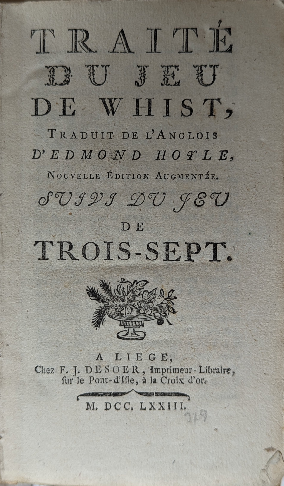

A Descriptive Bibliography of Edmond Hoyle
Copyright © 2014-26 by David Levy
(page updated 2023-11-17)User Guide
Desoer.Whist.Fr.1773
Traité du Jeu de Whist, Chez F. J. Desoer, nouvelle édition augmentée, 1773.
 |
Title: | TRAITÉ | DU JEU | DE WHIST, | Traduit de l'Anglois | D'EDMOND HOYLE, | Nouvelle Édition Augmentée. | SUIVI DU JEU | DE | TROIS-SEPT. | [tailpiece] | A LIEGE, | Chez F. J. DESOER, Imprimeur-Libraire, | ſur le Pont-d'Iſle, à la Croix d'or, | [short decorative rule] | M. DCC. LXXIII. |
| Collation: | 12o: A–I6 [$½ (+B4) signed]; 54 leaves, pp. [1–2] 3–106 [2 ] |
| Contents: | Signature (Page) Reference | Contents | Signature (Page) Reference | Running Titles |
| A1r (1) | title | |||
| A1v (2) | blank | |||
| A2r–A2v (3–4) | Whist rules | |||
| A3r–A4v (5–8) | ‘[decorative rule] | EXPLICATION | De quelque termes, ou mots Techniques | employés dans ce Traité, à l'uſage des | Commençants. | [...]’ | A3v–A4r (6–7) | ‘Explication.’ | |
| on A4v (8) | ‘Explication, &c’ | |||
| A5r–H2v (9–88) | ‘[headpiece] | TRAITÉ | DU JEU | DE WHIST. | [...]’ | A5v–H3r (10–89) | ‘Traité | du Jeu de Whiſt.’ | |
| H3r–H3v (89–90) | ‘[decorative rule] | EXTRAIT | DE L'AVANT-COUREUR, | FEUILLE HEBDOMADAIRE | de Paris, | En date du 29 Juilliet 1765, No. 30, page 467. | [...]’ | H3v (90) | ‘Traité du Jeu, &c.’ | |
| H4r–I5v (91–106) | ‘[decorative rule] | LE JEU | DE | TROIS-SEPT. | [...]’ | H4v–I5r (92–105) | ‘Le Jeu | de Trois-Sept.’ | |
| I6r–I6v | ‘[decorative rule] | TABLE | Des principaux Articles contenus | dan ce Livre. | [...]’ |
| Publisher: | Chez F. J. Desoer |
| References: | Depaulis 112 |
| Copies Seen: | O [Jessel f.589]; NvLN [GV1277.H6914 1773]; Levy [1826]; Levy [2122] |
| Other Copies: | KBR [II 13.969 A] |
| Notes: | The Oxford, Las Vegas and one of the Levy copies are bound with Le Jeu des Échecs, Traduit de l'Italien de Giachino Greco, Calabrois. Nouvelle Edition. A Paris, Chez les Libraires Associés (1774). The book was reissued with a cancel title in 1781 without the added chess book.The other Levy copy has Le Jeu de Whist, Satyre. A Paris, Chez Léopold Collin (1807) bound between the sections on whist and trois-sept. After trois-sept is a second unidentified book on the game, Regles du Jeu de Trisept. A Naples, Aux dépens de la Compagnie des Joueurs. |